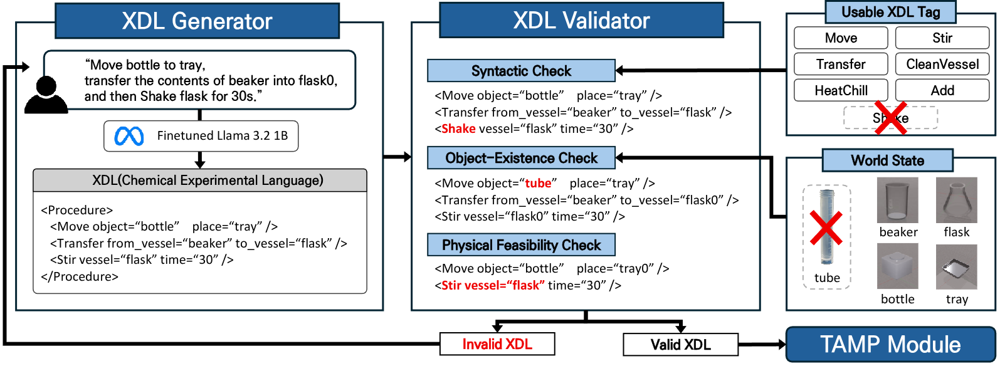
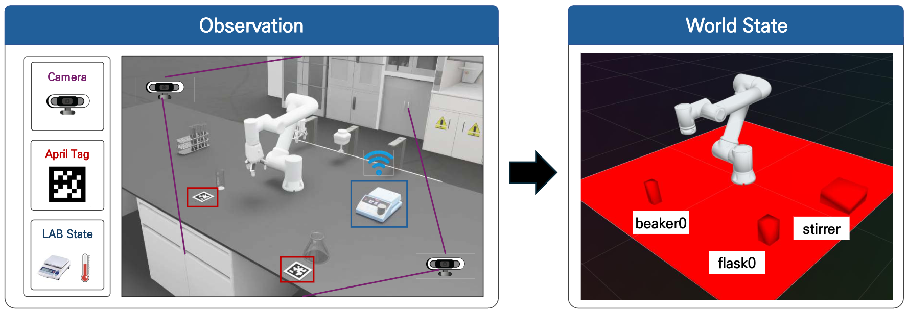
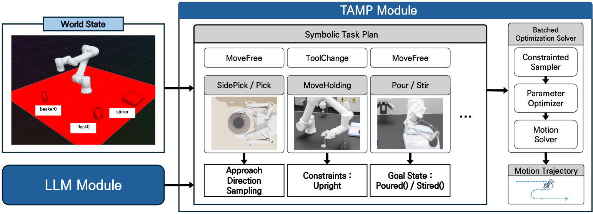
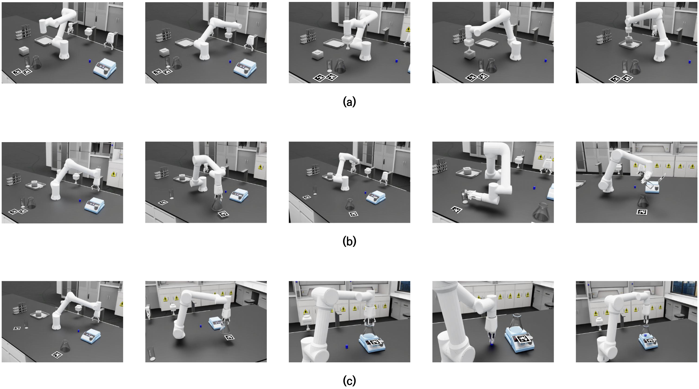

LLM-Guided Tool-Aware Task and Motion Planning for Chemistry Lab Automation

Abstract
Autonomous chemistry laboratories can accelerate material discovery and improve experimental reproducibility, yet current systems remain limited in two respects: existing automation pipelines rely on protocol-specific equipment that restricts adaptability to diverse, non-linear workflows, and task and motion planning on robots with limited kinematic redundancy becomes unreliable when strict orientation, collision, and workspace constraints must be satisfied at once. This paper proposes LLM-Guided Tool-Aware TAMP (Task and Motion Planning), a hierarchical framework that combines large language model (LLM)-based symbolic reasoning with GPU-accelerated motion optimization for chemistry automation. The system converts natural-language experimental instructions into validated Chemical Description Language (XDL) protocols, selects appropriate end-effectors and plans obstacle rearrangement based on execution context, estimates the scene state through multi-view fiducial marker-based perception, and produces collision-free, constraint-satisfying trajectories by evaluating thousands of candidates in parallel. A sensor-driven skill library handles execution-level actions such as tool changing and adaptive pouring. On a 6-DoF manipulator, the GPU-parallelized planner achieves a 96.7% planning success rate under orientation constraints, up from 63.3% with a CPU-based sampling baseline, with lower planning-time variance. We build a high-fidelity simulation testbed in NVIDIA Isaac Sim for randomized trials and module-level ablation studies, and results confirm that the full framework executes complete chemical sequences involving tool switching, obstacle rearrangement, and multi-step reagent manipulation.
Methodology
System Overview. Upper: Multi-Layer Failure Resolution Hierarchy. LLM Module resolves semantic failures via XDL generation (left), Perception Module resolves state-grounding failures via 6-DoF localization (center), and TAMP Module resolves planning-reliability failures via GPU-parallelized optimization (right). Lower: Execution-Level Failure Resolution. Skill Library Module converts nominal trajectories into sensor-feedback-driven motion primitives, resolving physical uncertainties and ensuring stable contact-rich task execution.
Context-Aware Protocol Generation & Action Reasoning

The LLM Module serves as the high-level reasoning backbone, comprising two components: the XDL Generator, which parses natural-language chemical protocols into machine-readable XDL procedure sequences, and the Action Reasoner, which determines the appropriate end-effector, whether obstacle rearrangement is needed, and the target grid for relocated objects. Joint reasoning over current and subsequent procedures enables context-aware rearrangement and semantic tool assignment grounded in object affordances, reducing manual domain redefinition even for novel vessel types.
Real-Time World-State Grounding

The Perception Module provides real-time 6-DoF pose estimates of all laboratory assets using AprilTag markers and two calibrated RGB cameras. Per-object poses are computed in the robot base frame and fused via inverse-distance weighting — with SLERP for orientation — to maximize robustness against occlusions, then broadcast over the ROS 2 TF tree at 30 Hz. The module also aggregates and filters scale and temperature sensor streams, providing clean feedback signals for closed-loop skills such as adaptive pouring and temperature regulation.
Batched Joint Differentiable Optimization with Chemistry-Specific Operators

The TAMP Module adopts cuTAMP as its planning solver, jointly optimizing all constraints across thousands of batched candidate particles via gradient-based updates, with structurally bounded runtime that ensures time-sensitive reaction conditions are never disrupted. Four chemistry-specific operators are introduced: SidePick for full-circumference grasping of cylindrical vessels, MoveHolding for upright-constrained liquid transport, Pour for decoupled geometric pouring trajectories, and Stir for device-level stirrer control delegated entirely to the execution layer.
Sensor-Feedback-Based Motion Primitives
The Skill Library Module instantiates nominal TAMP trajectories into sensor-feedback-driven motion primitives. Adaptive Pouring dynamically adjusts wrist angular velocity via PD control using real-time scale feedback. Automatic Tool Changing executes electromagnet control and mechanical latching upon reaching the tool rack. Feedback-Based Device Control monitors temperature and RPM streams, suspending execution until target physical conditions are confirmed at the execution layer.
Experiments

Sequential execution snapshots of the Move → Transfer → Stir workflow. Each row shows five representative keyframes from a single trial. (a) Move: the robot relocates the container to the target zone. (b) Transfer: liquid reagent is poured into the destination vessel. (c) Stir: the mixture is stirred on the hotplate to complete the reaction sequence.
XDL Generation & Validation
The XDL Generator achieves a 97% success rate on 100 test instructions, with zero syntax or semantic errors. The XDL Validator records 100% classification accuracy across all injected error categories with zero false positives and negatives.
| Metric | Result (%) |
|---|---|
| Total Trials | 100 |
| Valid | 97 |
| Invalid | 3 |
| Success Rate | 97 |
TAMP Planning Reliability
cuTAMP achieves 100% planning success across all three tasks, compared to 60–83% for PDDLStream, with the most pronounced gap on Transfer where orientation constraints are most restrictive. Unlike PDDLStream, cuTAMP maintains structurally bounded runtime with low variance, a critical property for time-sensitive chemical workflows.
| Task | Solver | Success (%) | Planning Time (s) | Timeout (%) |
|---|---|---|---|---|
| Transfer | PDDLStream | 66.7 | 7.21 ± 10.26 | 10.0 |
| cuTAMP (Ours) | 100.0 | 31.18 ± 1.44 | 0.0 | |
| Move | PDDLStream | 83.3 | 0.17 ± 0.12 | 0.0 |
| cuTAMP (Ours) | 100.0 | 17.60 ± 3.55 | 0.0 | |
| Stir | PDDLStream | 60.0 | 0.79 ± 0.70 | 23.3 |
| cuTAMP (Ours) | 100.0 | 28.83 ± 1.00 | 0.0 |
LLM-Based Tool Selection & Context-Aware Rearrangement
Randomized Trial Videos
Transfer
Stir
The Action Reasoner achieves 100% accuracy on tool selection, rearrangement necessity, and auxiliary tool inference. Context-aware rearrangement reaches 96.67% sequence completion on Transfer → Stir, versus 50.0% for random and 0% for no rearrangement, confirming that procedural context is decisive for multi-step execution.
| Sequence | Metric | No Rearrange | Random Rearrange | Context-Aware (Ours) |
|---|---|---|---|---|
| Transfer → Stir | Step 1 Success | 0% | 60.0% | 96.67% |
| Sequence Completion | 0% | 50.0% | 96.67% | |
| Stir → Transfer | Step 1 Success | 100.0% | 100.0% | 100.0% |
| Sequence Completion | 13.33% | 40.0% | 83.33% |
End-to-End System Evaluation
Evaluated over 30 trials per workflow from a single natural language command, the integrated system achieves an overall end-to-end success rate of 97.78%, with XDL generation succeeding in 100% of all trials.
| Workflow | XDL Gen. (%) | Planning (%) | Execution (%) | End-to-End (%) |
|---|---|---|---|---|
| Move → Transfer | 100.0 | 100.0 | 100.0 | 100.0 |
| Transfer → Stir → Move | 100.0 | 96.67 | 96.67 | 96.67 |
| Move → Transfer → Stir | 100.0 | 96.67 | 96.67 | 96.67 |
| Overall Average | 100.0 | 97.78 | 97.78 | 97.78 |
Appendix
Hyperparameters of LLM Module
Both LLM components are fine-tuned from a 4-bit quantized Llama 3.2 1B base model via LoRA-based supervised fine-tuning. Configurations differ between the two components based on their respective task structures.
| Parameter | XDL Generator | Action Reasoner |
|---|---|---|
| Base Model | Llama 3.2 1B (4-bit quantized) | |
| Fine-tuning Method | LoRA-based SFT | |
| LoRA Rank (r) | 16 | 8 |
| LoRA Alpha (α) | 32 | 16 |
| Dropout | 0.05 | 0.05 |
| Optimizer | AdamW (8-bit) | |
| Learning Rate | 2 × 10⁻⁴ | 1 × 10⁻⁴ |
| Batch Size | 16 | |
| Epochs | 5 | 3 |
| Training Dataset Size | 5,000 | 3,000 |
Training Dataset Details
The XDL Generator dataset covers 5,000 samples across four combinatorial axes: synonym variations for six core XDL operators (Add, Stir, HeatChill, Transfer, CleanVessel, Move), continuous numerical parameter ranges (0–20 mL, 0–20°C, 1–30 s), 16 unique object identifiers, and command complexity distributed as 30% single-step, 40% two-step, and 30% three-step procedures. The Action Reasoner dataset consists of 3,000 samples generated by placing up to four objects on 12 workspace grids, balanced across rearrangement-required and rearrangement-unnecessary cases to prevent over-prediction.
TAMP Module Configuration
| Parameter | Value |
|---|---|
| Parallel Particles | 1,024 |
| Optimization Steps | 1,000 |
| Planning Timeout | 60 s |
| Max Retries | 3 |
| Max Allowable Tilt (θmax) | 5° |
| Workspace Grids | 12 (G1–G12) |